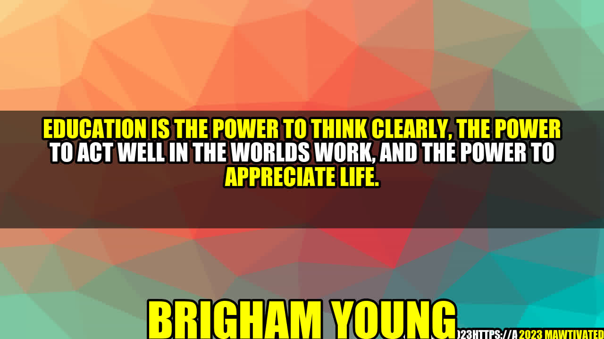

The Power of Education- An Inspiring Story

Once upon a time, there lived a boy named Peter. He belonged to a poor family and lived in a small village. Peter was passionate about studying but due to his financial situation, he never had the opportunity to attend school. Despite that, Peter was determined to learn and he spent his days reading books that were borrowed from the village library.
One day, a kind-hearted teacher noticed Peter's dedication towards learning and decided to help him. He taught Peter everything he knew and also provided him with the necessary resources. With time, Peter became an intelligent young man and went on to pursue higher education. He eventually became a successful doctor and lived a fulfilling life.
"Education is the power to think clearly, the power to act well in the world's work, and the power to appreciate life."
The Importance of Education
- Education enables individuals to think critically and make informed decisions about their lives and the world around them
- It equips individuals with the necessary skills and knowledge to pursue their passions and achieve their goals.
- Furthermore, education plays a critical role in shaping society by promoting tolerance, diversity, and equality.
Examples of the Power of Education
Here are a few individuals who have harnessed the power of education to make a positive impact on society:
- Malala Yousafzai- Despite facing numerous challenges, Malala pursued her education and fought for the rights of girls to receive an education. She later became the youngest-ever Nobel Prize laureate.
- Elon Musk- Musk's education in physics and economics paved the way for him to become one of the most innovative entrepreneurs of our time.
- Oprah Winfrey- Despite facing numerous obstacles, Oprah used education as a tool to empower herself and others. She later became a media mogul and philanthropist.
Practical Tips for Harnessing the Power of Education
- Set realistic goals for your education and create a plan to achieve them
- Invest in your education by taking courses, reading books, and attending seminars
- Surround yourself with individuals who share your passion for learning and can serve as mentors or accountability partners
In Conclusion
To summarize, education is truly a powerful tool that can transform lives and society. By harnessing the power of education and pursuing our passions, we can achieve great things.
- Education provides individuals with the power to think critically, act effectively, and appreciate life
- Examples of individuals who have harnessed the power of education include Malala Yousafzai, Elon Musk, and Oprah Winfrey
- Practical tips for harnessing the power of education include setting realistic goals, investing in your education, and surrounding yourself with partners in learning
Hashtags: #education #powerofeducation #lifetransformation
Keywords: education, transformation, learning, empowerment, society
Article Category: Education & Society
Curated by Team Akash.Mittal.Blog
Curated by Team Akash.Mittal.Blog
Share on Twitter Share on LinkedIn